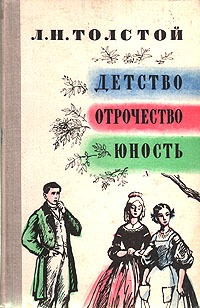

О нашем магазине
Адрес:

Наш офис находится по адресу: улица Профессора Попова, 5.
Всезнайка
Заказывайте книги одним кликом!
Детство. Отрочество. Юность
Год издания: 1852-1857
Автор(ы): Лев Николаевич Толстой
Жанр(ы): Детсткая литература, автобиография
Цена: 343 рублей
Подробное описание:
«Детство» — первая повесть в псевдо-автобиографической трилогии Льва Толстого, впервые напечатана в 1852 году в журнале Современник, № 9. Эта книга описывает большие психологические переживания, которые испытывают многие мальчики в детстве: первая влюблённость, чувство несправедливости, обида, стеснение.
«Отрочество» — вторая повесть в псевдо-автобиографической трилогии Льва Толстого, впервые напечатана в 1854 году в журнале Современник. Эта книга описывает события, происходящие в жизни подростка во время отрочества: первое предательство, изменение моральных ценностей и т. п.
«Юность» — третья и последняя повесть в псевдо-автобиографической трилогии Льва Толстого, впервые напечатана в 1857 году в журнале Современник № 1 . Книга описывает университетские годы жизни главного героя и его сокурсников.
Цитата из произведения:
12 августа 18…, ровно в третий день после дня моего рождения, в который мне минуло десять лет и в который я получил такие чудесные подарки, в семь часов утра — Карл Иваныч разбудил меня, ударив над самой моей головой хлопушкой — из сахарной бумаги на палке — по мухе. Он сделал это так неловко, что задел образок моего ангела, висевший на дубовой спинке кровати, и что убитая муха упала мне прямо на голову. Я высунул нос из-под одеяла, остановил рукою образок, который продолжал качаться, скинул убитую муху на пол и хотя заспанными, но сердитыми глазами окинул Карла Иваныча. Он же, в пестром ваточном халате, подпоясанном поясом из той же материи, в красной вязаной ермолке с кисточкой и в мягких козловых сапогах, продолжал ходить около стен, прицеливаться и хлопать.